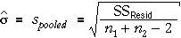

Conventional t-test
When the standard deviations are assumed to be equal in two groups,

the standard t-test for comparing the group means uses a 'pooled estimate' of σ,
where n1 and n2 are the sample sizes in the two groups and s1 and s2 are the two sample standard deviations. The usual test for a difference between the group means is based on the standardised difference between the sample means,
This t-statistic is compared to a t distribution with (n1 + n2 - 2) degrees of freedom.
T-test using GLM methodology
The same model can be expressed as a GLM,

When this model is fitted by least squares, the fitted values are the sample means in the two groups. The residual sum of squares has (n - 2) = (n1 + n2 - 2) degrees of freedom and is equal to

In any GLM, the best estimate of the error standard deviation, σ, is the square root of the mean residual sum of squares. For this model, it is equal to the 'pooled estimate' that was shown above.

In this GLM, testing for equality of the group means is equivalent to testing whether δ2 is zero. The least squares estimate of δ2 is
The GLM test for whether δ2 is zero is based on a t-statistic that divides this estimate by its standard error, so it is also
The GLM test for whether δ2 is zero is identical to the conventional t-test for equal group means.
Anticipation of hypnosis
The following diagram shows the hypnosis data.
The table below shows the least squares estimates for the GLM and their standard errors.
| Parameter | Estimate | Std error | t statistic | p-value |
| Intercept, µ1 | 4.573 | 0.1625 | 28.15 | < 0.001 |
| Slope, δ2 | 0.491 | 0.2297 | 2.14 | 0.051 |
The p-value for the slope parameter is close to 5%, so there is only weak evidence that the anticipation of hypnosis changes the ventilation rate of the subjects.
The same t-statistic and p-value would be obtained from a conventional 2-sample t-test comparing the group means.